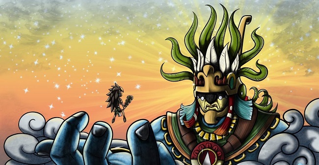

Dualidad
Aquí te presentamos al Dios Huitzilopochtli, es el sumo dueño y señor del Omeyacan. Este es el lugar de la dualidad mexica. Aquí van los muertos en batalla Es el punto más alto de los 13 niveles celestiales de la cultura Mexica.
Intenta preguntandole a Huitzilopochtli:
- ¿Por qué se celebra el día de muertos?
- ¿Que pasa en el Mictlán?
- ¿Eres un muerto?
- ¿De que eres Dios?
- ¿Cuál es el mito de tu nacimiento?
- ¿Por qué eras considerado el más temido por todos?
- ¿Por qué los españoles te consideraban un demonio?
- ¿Por qué te convertiste en una deidad?.
- ¿Eres el Dios más fuerte?
No dudes en preguntarle a Quetzalcoatl
Anda merodeando por aquí
